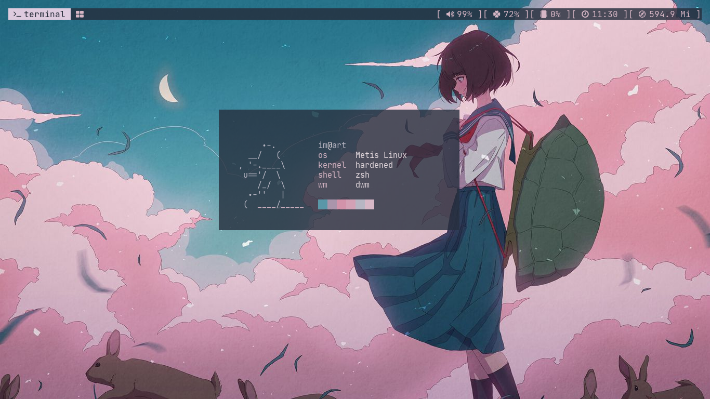
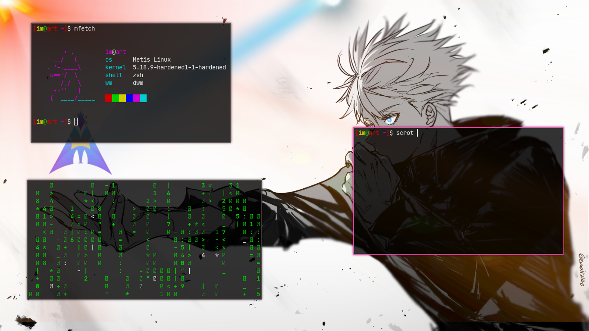
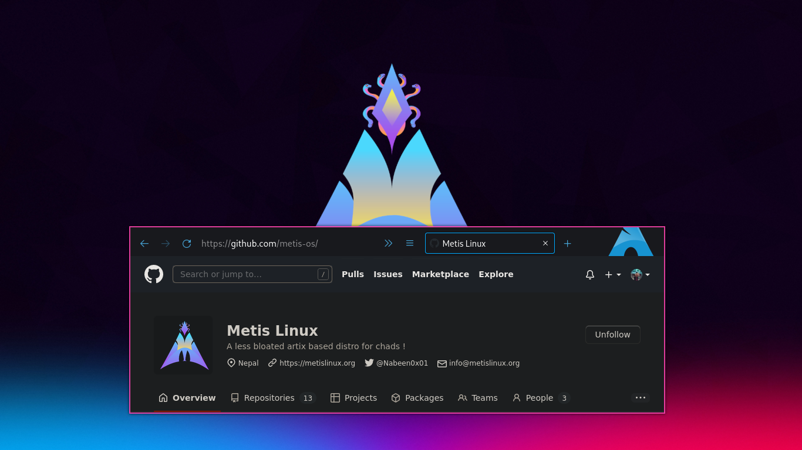
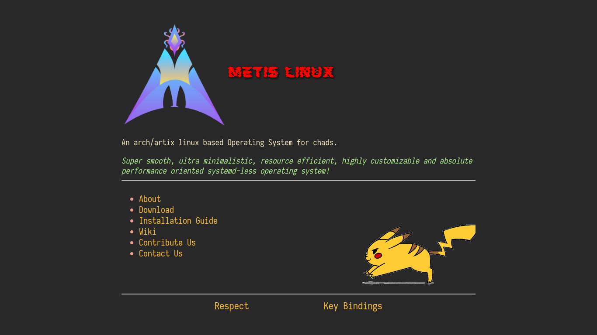

Download Metis Linux
Metis Linux is an artix based super fast, lightweight,simple and flexible distribution that uses runit as an init system [ simply no systemD ] & super tiny scripts to install & manage the whole operating system. We Always focus on user freedom and if anything can be simple , let's just simplify it. Our implementations are written from shell and c/c++. Metis Linux is POSIX compatible, means our project can be easily portable to any other operating system. metislinux aimed at providing a stunning experience to new Tiling Window Manager users, it provides an easy gateway to the tiling window manager world with sane configs and keybinds that are easy and memorable. The metislinux team wishes to make tiling window managers less intimidating by providing a polished experience out of the box.
We currently ship only a single varient of Metis Linux i.e, with DWM.
Ready To Download?
Check the installation guide for detailed installation instructions.
Metis Linux DWM Edition
Super minimalistic, smooth, resource efficient and highly customizable OS for absolute performance.
First ever release of Metis Linux is Finally here! It's a pre release but is super useable as a productive daily driver.
- 
- 
- 
- 

Yes! Metis Linux is Completely Free and open source. Want to see it's source code?